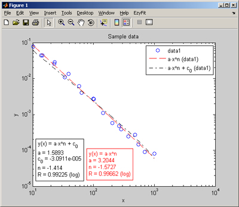
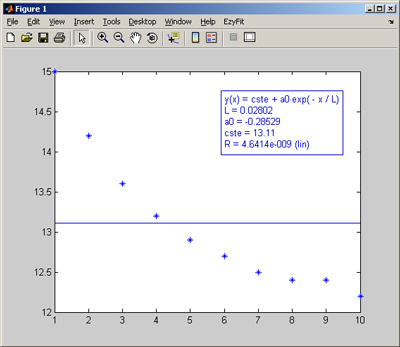
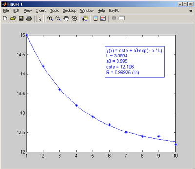
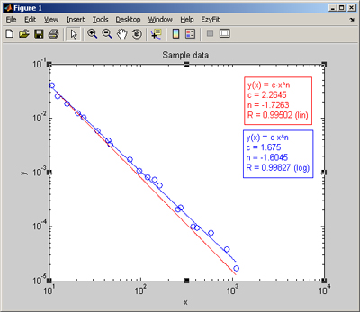

| EzyFit Frequently Asked Questions |
to have the EzyFit menu by default in all your figures (this will automatically run efmenu at each Matlab restart).efmenu install
plotsample power
showfit('a*x^n; n=-1','fitcolor','red','fitlinestyle','--');
showfit('a*x^n+c_0; n=-1','fitcolor','black','fitlinestyle','-.');
legend show

See the Settings page for details.See this question to see how to get the fitted values from f.f = ezfit(x,y,'a*ln(x/c)+k');
which you want to fit with an exponential decay,x=1:10; y=[15 14.2 13.6 13.2 12.9 12.7 12.5 12.4 12.4 12.2]; plot(x,y,'*')
showfit('cste+a0*exp(-x/L)');
which obvisouly is bad. By default, showfit has used cste=1, a0=1 and L=1, which is too far away from the 'true' coefficients. To specify the intial guess:showfit('cste+a0*exp(-x/L); cste=10');
which is clearly much better. In this example, the initial guesses for a0 and L, which are omitted, are 1.showfit('cste+a0*exp(-x/L)',[10 1 1]);If you tryplotsample power
showfit('power')showfit('power;log','fitcolor','blue');
showfit('power;lin','fitcolor','red');
In this example, the fit with option log (blue line) "works better" when displayed with a logarithmic Y-axis.f = ezfit('a*x+b');This will create two variables, 'a' and 'b'. You can also set the option 'automakevarfit = on' in fitparam: This will call makevarfit each time ezfit (or showfit) is executed.makevarfit(f);
This will update the file 'userfit.mat' in the EzyFit directory, so your fit equation may be re-used in a future session. You can now fit your data using this user-defined fit,editfit(3,'myspectrum','E(k) = C*k^(-n); C=0.1; n=2; log');
showfit('myspectrum');and to save it in a Mat-file,myfit = 'E(k) = C*k^(-n); C=0.1; n=2; log';
save('myfits.mat','myfit');showfit(myfit);